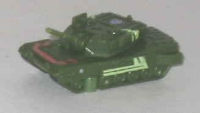
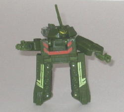
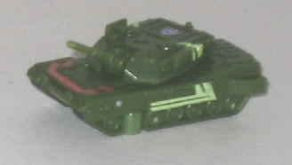
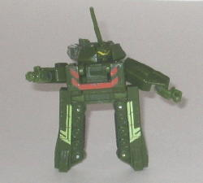
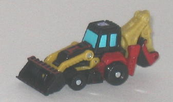
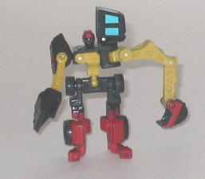
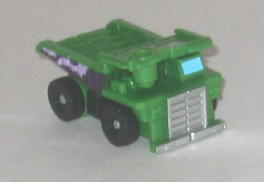
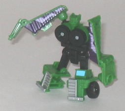

 
Difficulty of Transformation : Very Easy
Color Scheme : Dark military green and some black, dull orange, dull yellow, and light leafy green
Individual Rating : 3.2
Allegiance
: Decepticon
Size
: Mini-Con (3-pack)
Overall Rating
: 5.1
 Broadside
Broadside


Difficulty of Transformation
: Very
Easy
Color Scheme
: Dark military green
and some black, dull orange, dull yellow, and light leafy green
Individual Rating
: 3.2
Broadside's vehicle mode
is a tank, and like most Classics Minicons, it's an exceptional alt mode
for being so small. There's no robot extras to speak of, and the proportions
are spot-on. There's TONS of mold detailing all over the place-- nearly
as much as I'd expect on a full-fledged deluxe toy, in fact. He also has
a fair amount of paint apps-- the dull orange and light green help to break
up all the dark green and keep Broadside from looking too plan. The turret
can also move from side-to-side, and the gun can move up and down as well,
the latter pretty cool and unexpected for such a small toy. Broadside's
Minicon port is on the underside of this mode, near the center.
Question: Is there anything
good about Broadside's robot mode? Answer: The chest looks pretty good
proportionally. However, EVERYTHING else about Broadside in this mode is
so incredibly horrid I'm flabbergasted it made it past the design concept
stage. First off, his head is formed by turning the tank gun upwards, and
it looks ridiculously just coming from the side of the large main turret
like that and having a long pointy gun sticking out of the top of it. The
fact that he has really big "chubby cheeks" doesn't help, either. The shoulders
actually come out from BEHIND the head, making it pretty much impossible
to make the arms look normal in any position. (His gatling-gun hand is
rather cool, though.) The legs are the worst of all-- not are they too
long proportionally, but they're made up of the thin slabs of the sides
of the tank mode, and look absolutely ridiculous from any angle. Plus,
they're so thin, it's nearly impossible to get Broadside to stand up by
himself! Broadside can move at the head, shoulders, and hips-- if you can
get him to stand up in any real pose, that is.
Don't be suckered in
by Broadside's very nice vehicle mode-- his robot mode is ugly beyond measure,
and honestly shouldn't have made it into production. One of the worst non-Happy
Meal Transformers toys to come out, especially in recent years.
 Sledge
Sledge


Difficulty of Transformation
: Very
Easy
Color Scheme
: Black, dull mustard
yellow, moderately dark red, and some sky blue
Individual Rating
: 4.7
Sledge's vehicle mode
is a front-end loader/shoveler hybrid, and looks pretty good overall. The
proportions are good enough, though the robot feet sticking out from behind
the rear wheels are a bit obvious. There's plenty of mechanical mold detailing
all over the place, and there's plenty of paint apps-- the red really looks
nice against the black, and the dull yellow is another nice contrast color.
Overall, it's a pretty nice, original color scheme. The front shovel can
move at two points and the rear shovel at three, so he can do all the mini-digging
action you can want. Sledge's Minicon port is on the underside of this
mode, slightly to the front of center.
In what is sadly becoming
a trend among the Classics Minicons, however, Sledge has a darned ugly
robot mode. I can deal with the rear shovel becoming an arm, it at least
gives him some uniqueness while still looking a bit like an arm. Making
the front shovel an arm as well, however, just looks ugly, especially since
the front shovel is connected to the shoulder by two points, not one, and
it doesn't really even look much like an arm. The vehicle cockpit also
just hangs off to one side of Sledge's head, without even any attempt to
hide it or make it accent the mode. At least the actual head is a fairly
good sculpt, however, with a "construction hat"-like head which works well
with the alt mode. Other proportional problems Sledge has is that the chest
is oddly symmetrical, and the waist is too skinny while the hips are way
too wide. The legs themselves look decent enough, however. Sledge can move
at the shoulders (the right shoulder at two points), elbows, "wrist" on
the left arm, waist, and hips.
Sledge has a pretty
nice-looking vehicle mode and a FEW good points about his robot mode, but
he definitely has a lot of proportional problems and overall his robot
mode just looks like a mess. At least he's not as bad as Broadside, though.
 Wideload
Wideload


Difficulty of Transformation
: Very
Easy
Color Scheme
: Green, black, and
some dark purple, silver, sky blue, and light purple
Individual Rating
: 7.4
Wideload's dump truck
alt mode is a dead ringer for
Energon Demolishor
,
both in terms of general style and proportions and the color scheme, as
well. The green, black, silver, and purple are typical "Decepticon Construction
Vehicle/Constructicon homage" colors and hardly original, but that doesn't
mean they don't look good. The light purple designs on the sides look especially
cool. And, as is typical with Classics Minicons, Wideload has some great
mold detailing-- you can even make out a teeny tiny ladder near her front
bumper! What's especially impressive for such a small Transformer is that
you can lean over her rear section so that she "dumps out" whatever she's
holding! About the only real downside to this mode is that her robot head
is pretty obvious from a rear or side view. Wideload's Minicon port is
on the front topside of this mode, on the right, which is a pretty weird
place to put a port...
Wideload's robot mode
is pretty good-- definitely the best of the Demolition Team's-- but it
still does have a few downsides. The biggest one is that she has no real
arms, they're just the halves of the rear section of her vehicle mode.
I mean, even molding in hands on the sides would've helped, but nope. They
don't look a thing like arms. There's also the matter of her... erm...
chest. I mean, with the tires making up her chest, I can only assume she's
a female, hence the feminine pronouns, but I'm rather surprised that got
past the higher-ups. The head also looks rather feminine, furthering my
guess that she's female, but she REALLY needs some apint apps on that head,
it's got some great details that need to be highlighted. Otherwise, this
mode looks pretty nice-- the legs and main body trunk look pretty solid,
though her feet don't have quite enough of a "heel" to keep Wideload as
steady as she otherwise would be. Wideload can move at the shoulders waist,
hips, and knees-- however, her arm joints are made in such an odd manner
that she you have to angle her shoulders upwards in order to get her to
move her arms forward, which is a little more restrictive in movement than
I'd like.
Wideload is definitely
the best of the Demolition Team, with a solid robot mode and a pretty good
robot mode, too. Her arms (or, for all purposes, lack of them) are her
only really big drawbacks.
Wideload is a decent enough Minicon, but you can do FAR better than Sledge and Broadside when it comes to finding a good Minicon toy. One out of three really isn't all that good of a value-- unless you can manage to find Wideload individually on eBay or something for a cheap price, I'd pass all three of these up unless you're a particularly big Minicon addict/completist. My least recommended of the Classics Minicon Teams.
Review by Beastbot